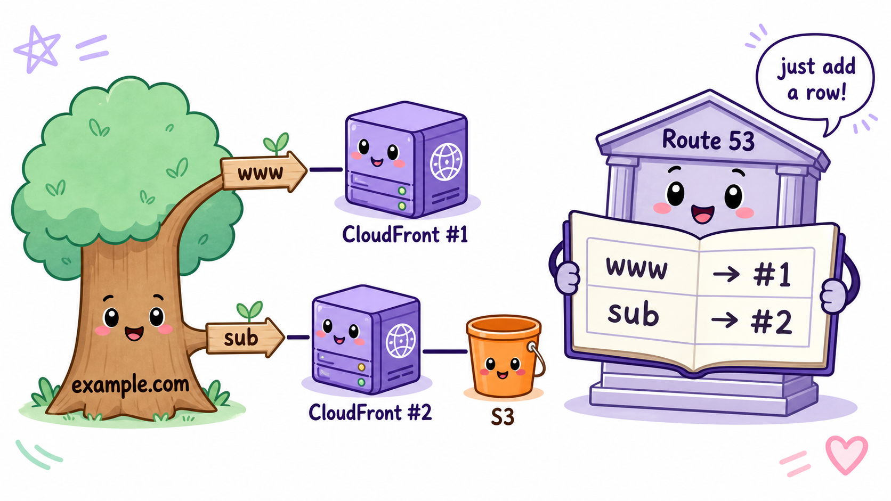
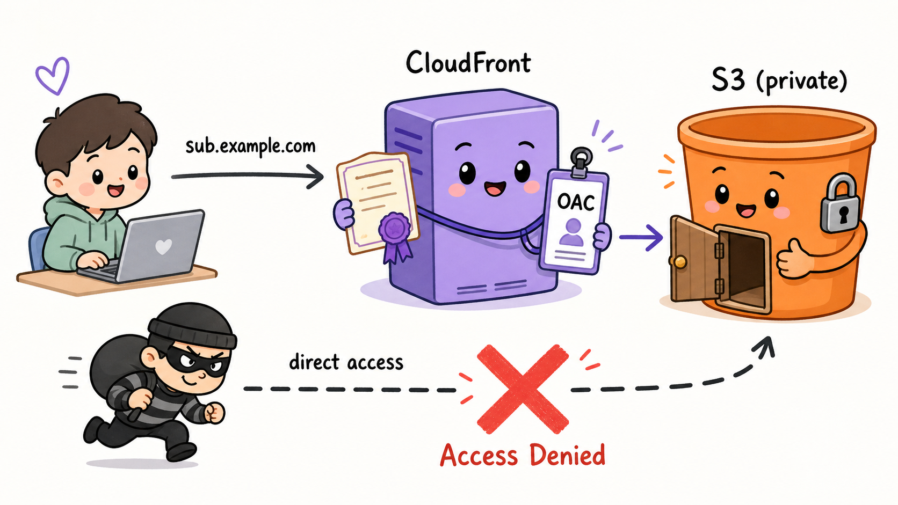

サブドメインと秘匿された保管庫
— S3静的サイト公開の手引 —
前件にてドメインの構えは完成した。次なる依頼はこうである——「同じドメインのサブドメインに、静的ファイルのみを収めた別のS3を公開したい」。結論から言えば、新たに購うものは何一つない。作るのは三つ、足すのは台帳の一行である。
I.何を作り、何を作らないか
既にあるもの : example.com → CloudFront ① → 既存のオリジン
今回作るもの : sub.example.com → CloudFront ②(新規)→ S3(新規・非公開)| 新たに作るもの | 個数 | 役割 |
|---|---|---|
| S3バケット | 1 | 静的ファイルの保管庫 |
| CloudFrontディストリビューション | 1 | HTTPSと独自ドメインの窓口 |
| Route 53のAレコード(エイリアス) | 1行 | sub → CloudFront② の案内 |
逆に作らなくてよいもの:新しいドメインの購入、お名前.comでの作業、新しいホストゾーン、そして(*.example.com のワイルドカードが発行済みなら)新しい証明書。いずれも不要である。
II.サブドメインは「買う」ものにあらず
金を払って登記したのは example.com という「土地」である。その土地の中をどう区切るかは持ち主の自由。sub も www も api も、Route 53のホストゾーン——すなわち自分の台帳——に一行書き足すだけで、誰の許可も追加料金も要らずに無限に作れる。

図1 — example.comという木から枝を伸ばすだけ。Route 53曰く「台帳に一行足すだけですよ」
III.なぜS3単体では足りず、CloudFrontをもう一基据えるのか
| 要件 | S3単体 | CloudFront経由 |
|---|---|---|
| HTTPS(独自ドメインの証明書) | ❌ 設定できない | ✅ ACM証明書を設定可 |
| 独自ドメイン | △ バケット名の縛りあり | ✅ 代替ドメイン名で自由 |
| バケットを非公開に保つ | ❌ 世界に公開が必要 | ✅ 非公開のまま配信 |
| 高速配信・キャッシュ | ❌ | ✅ |
証明書を持てるのはCloudFrontだけ。ゆえにHTTPSで独自ドメイン公開する以上、S3の前にCloudFrontを置くのがAWSの定石である。窓口(ドメイン)ごとに一基が基本ゆえ、既存①とは別に②を新設する。
OAC — 保管庫を世界に晒さぬための社員証
バケットは非公開のままとし、「CloudFront②からの訪問だけ扉を開ける」規則を敷く。これがOAC(Origin Access Control)である。CloudFrontはAWSが署名した社員証を提示し、バケットポリシー(入場規則)には「この社員証を持つ②のみ入場可」と記す。一般客や賊がバケットの住所を直接叩いてもAccess Denied。玄関をCloudFrontに一本化することで、キャッシュもHTTPS強制も効かぬ裏口を塞ぐのが狙いだ。

図2 — CloudFrontだけが社員証(OAC)で保管庫に入れる。裏口から忍び込もうとする者は門前払い
IV.手順書(マネジメントコンソール)
Step 1 — S3バケットを作る
- バケット名は任意、リージョンはどこでもよい(東京で可)
- 「パブリックアクセスをすべてブロック」はオンのまま
- 静的ファイル(
index.html等)をアップロード
Step 2 — 証明書を確認する(us-east-1)
- ACMコンソールをバージニア北部(us-east-1)に切り替え
*.example.comを含む証明書があれば再利用。無ければDNS検証で新規発行
* は「どんなサブドメインでも一致」のワイルドカード。一枚で www も sub も api も賄える万能身分証である。
Step 3 — CloudFrontディストリビューションを新設
- オリジン:Step 1のバケット(
.s3.リージョン.amazonaws.comの方を選ぶ) - オリジンアクセス:OAC を新規作成して割り当て
- ビューワープロトコル:「Redirect HTTP to HTTPS」
- 代替ドメイン名:
sub.example.com/ カスタムSSL証明書:Step 2のもの - デフォルトルートオブジェクト:
index.html
Step 4 — バケットポリシーを貼る(入場規則)
{
"Statement": [{
"Effect": "Allow",
"Principal": { "Service": "cloudfront.amazonaws.com" },
"Action": "s3:GetObject",
"Resource": "arn:aws:s3:::バケット名/*",
"Condition": { "StringEquals": {
"AWS:SourceArn": "arn:aws:cloudfront::アカウントID:distribution/②のID"
}}
}]
}Step 5 — Route 53に一行足す
- 既存ホストゾーン → レコード作成:名前
sub、タイプA、エイリアスオン → CloudFront②
Step 6 — 検分
# 案内が効いているか
dig sub.example.com
# HTTPSで開けるか(200が返れば良し)
curl -I https://sub.example.com
# 裏口が塞がっているか(AccessDeniedなら良し = OACが機能)
curl -I https://バケット名.s3.リージョン.amazonaws.com/index.htmlV.アクセス時の一部始終
1. ブラウザ「sub.example.com はどこ?」→ Route 53が一行を見て②を案内
2. TLS握手: ②が *.example.com の証明書を提示+秘密鍵の実演 → 🔒
3. ②がキャッシュから即応。無ければOACの社員証でS3へ → index.html取得
4. 表示 🎉(以後はエッジから即配達)新しい概念はOACただ一つ。残りはすべて前件で解明済みの手口の再演である。
VI.よくある未解決事項
| 症状 | 原因と対処 |
|---|---|
| 証明書エラー | 証明書が *.example.com を含まない。Step 2へ |
| Access Denied 表示 | バケットポリシー未設定/デフォルトルートオブジェクト未設定 |
| サブパスで Access Denied | S3+OACでは xxx/index.html の自動補完が効かぬ。CloudFront FunctionでURL書き換え(発展) |
| 更新が反映されない | エッジのキャッシュ。Invalidationで /* を指定 |
| 証明書が選択肢に出ない | us-east-1以外で発行している(前件と同じ罠) |